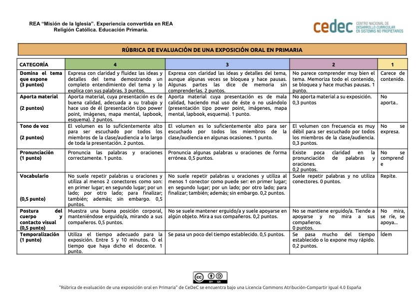

Cada grupo presentará su proyecto de investigación durante 15 minutos al resto de compañeros de clase usando los medios y aplicaciones ya comentadas.
Unas recomendaciones para antes de la exposición de grupo:
Organizad la exposición.
Ensayad exponiéndole a las otras personas del grupo.
Estudiad el tema de la exposición.
Preparad un guión.
Unos consejos para hacer la mejor exposición:
Utilizad material de apoyo.
No os extendáis con temas innecesarios.
No habléis demasiado rápido.
Disfrutad la exposición oral.
Cuidad los detalles.
Para la valoración de las presentaciones realizadas por cada grupo se tendrá en cuenta la siguiente rúbrica:
Antonio Jesús Gómez Ruiz. Rúbrica evaluación Proyecto "Misión de la Iglesia".(CC BY-SA)
Exposición oral.
A la hora de salir a presentar vuestro proyecto la “Misión de la Iglesia”, en la que habéis hablado sobre la misión de Jesús, la misión de los apóstoles y la misión de la Iglesia, es necesario que sepáis cómo se van a evaluar estas presentaciones, qué se va a tener en cuenta, cómo se hará y por qué es importante. ¡No hay que ponerse nerviosos, ya veréis que es muy fácil!
1.- ¿Para qué hacemos esta exposición?
No hacemos esto solo para poner una nota. Lo hacemos para aprender a compartir buenas noticias con los demás. Pensadlo bien: ¡vais a hacer exactamente lo mismo que hicieron los apóstoles! Ellos tuvieron que salir y contar a todo el mundo con sus propias palabras el mensaje de Jesús. Nosotros vamos a practicar cómo comunicar cosas importantes a nuestros compañeros.
2.- ¿Qué puntos se van a evaluar?
Principalmente en tres cosas súper sencillas:
Lo que nos contáis (El contenido): Que sepáis explicar con vuestras palabras (y que se note que lo habéis entendido) cuál fue la misión de Jesús, qué encargo les dio a sus apóstoles y qué es lo que hace la Iglesia hoy en día.
Cómo nos lo contáis (La expresión): Que habléis alto, claro y despacio. Es importante que miréis a vuestros compañeros a los ojos y que intentéis no estar leyendo el papel todo el rato. ¡Confiad en lo que sabéis!
El cariño y la creatividad: Se valorará si habéis traído algún dibujo, un pequeño mural o algo que haga que vuestra presentación sea más bonita y fácil de entender para el resto de la clase.
3.- ¿Cómo se va a evaluar?
Mientras vosotros estéis hablando y enseñando vuestro trabajo, yo estaré sentado atrás escuchando con atención. Usaré una plantilla muy sencilla (una especie de lista de puntos con los niveles con los que los habéis trabajado) donde iré marcando si habéis explicado bien las tres misiones, si habéis hablado claro y si habéis usado algún material de apoyo.
Lo más importante de todo es que disfrutéis contándonos lo que habéis aprendido. Habéis trabajado mucho en este proyecto y estoy seguro de que van a salir unas exposiciones geniales. ¡Mucho ánimo a todos!
Rúbrica de la exposición oral.

Antonio Jesús Gómez Ruiz.. Rúbrica para la exposición oral. (CC BY-SA)